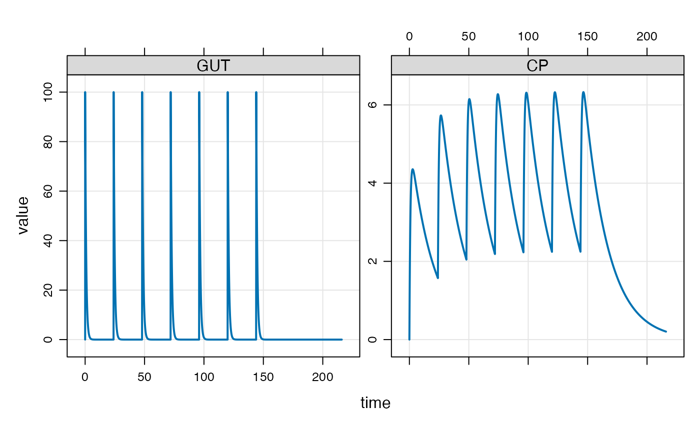

Introduction
Event objects are simple ways to implement PK dosing events into your model simulation.
Let’s illustrate event objects with a one-compartment, PK model. We
read this model from the mrgsolve internal model
library.
mod <- house(end = 216, delta = 0.1)Events
Events are constructed with the ev() function
e <- ev(amt = 100, ii = 24, addl = 6)This will implement 100 unit doses every 24 hours for a total of 7
doses. e has class ev, but really it is just a
data frame
e## Events:
## time amt ii addl cmt evid
## 1 0 100 24 6 1 1## time amt ii addl cmt evid
## 1 0 100 24 6 1 1We can implement this series of doses by passing e in as
the events argument to mrgsim

The events can also be implemented with the ev
constructor along the simulation pipeline

Combine events
mrgsolve has operators defined that allow you to combine
events. Let’s first define some event objects.
e1 <- ev(amt = 500)
e2 <- ev(amt = 250, ii = 24, addl = 4)
e3 <- ev(amt = 500, ii = 24, addl = 0)
e4 <- ev(amt = 250, ii = 24, addl = 4, time = 24)We can combine e1 and e3 with a collection
operator
c(e1, e4)## Events:
## time amt cmt evid ii addl
## 1 0 500 1 1 0 0
## 2 24 250 1 1 24 4mrgsolve also defines a seq() method that
lets you execute one event and then a second event
seq(e3, e2)## Events:
## time amt ii addl cmt evid
## 1 0 500 24 0 1 1
## 2 24 250 24 4 1 1Notice that e3 has both ii and
addl defined. This is required for mrgsolve to
know when to start e2.
Combine to create a data set
We can take several event objects and combine them into a single
simulation data frame with the as_data_set function.
e1 <- ev(amt = 100, ii = 24, addl = 6, ID = 1:5)
e2 <- ev(amt = 50, ii = 12, addl = 13, ID = 1:3)
e3 <- ev(amt = 200, ii = 24, addl = 2, ID = 1:2)When combined into a data set, we get * N=5 IDs receiving 100 mg Q24h x7 * N=3 IDs receiving 50 mg Q12h x 14 * N=2 IDs receiving 200 mg Q48h x 3
data <- as_data_set(e1, e2, e3)
data## ID time amt ii addl cmt evid
## 1 1 0 100 24 6 1 1
## 2 2 0 100 24 6 1 1
## 3 3 0 100 24 6 1 1
## 4 4 0 100 24 6 1 1
## 5 5 0 100 24 6 1 1
## 6 6 0 50 12 13 1 1
## 7 7 0 50 12 13 1 1
## 8 8 0 50 12 13 1 1
## 9 9 0 200 24 2 1 1
## 10 10 0 200 24 2 1 1To simulate from this data set, we use the data_set
function. First, let’s add an OMEGA matrix to this model: